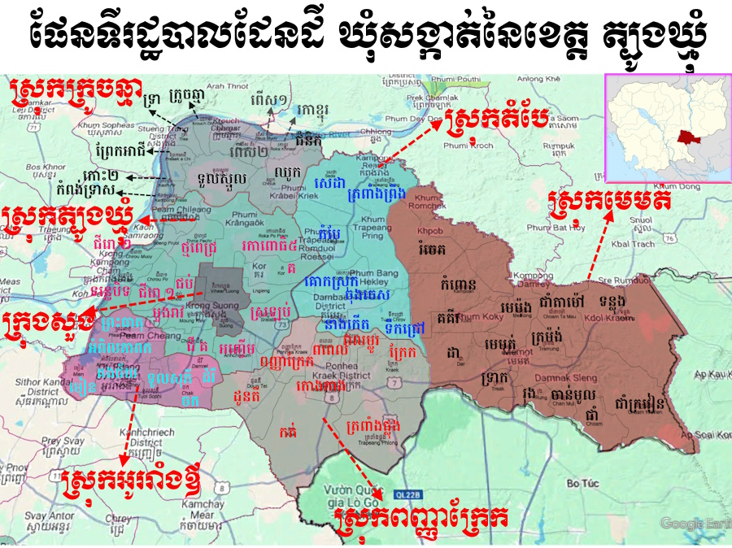
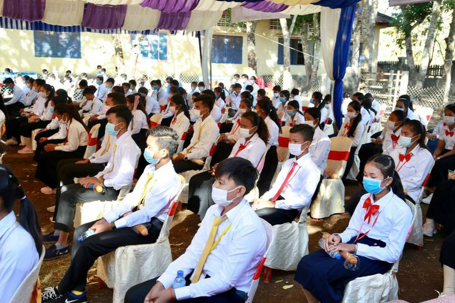
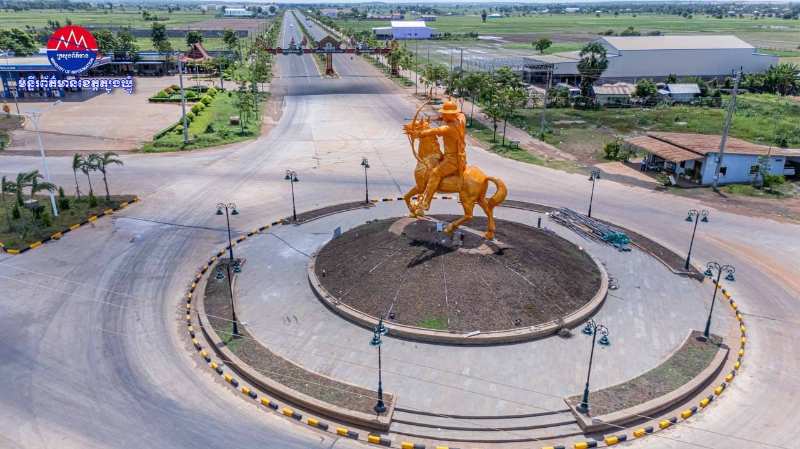
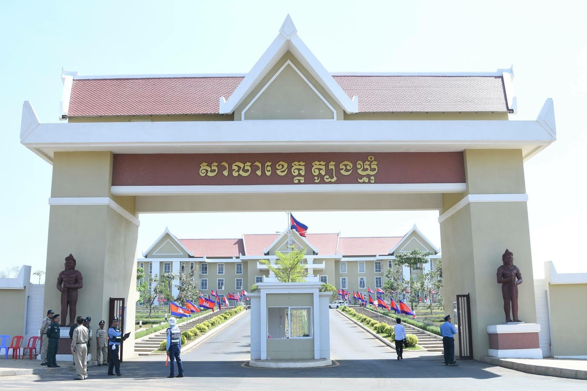

សូមស្វាគមន៍មកកកាន់
ខេត្តត្បូងឃ្មុំ

ខាងក្រោមនេះអ្នកនឹងអាចយល់ដឹងអំពីព័ត៌មានក្នុងខេត្តត្បូងឃ្មុំ
មាតិការ
១.ប្រវតិ្តខេត្តត្បូងឃ្មុំ.........................................................................................។
២.ទីតាំងភូមិសាស្ត្រ.........................................................................................។
៣.ប្រជាជន និងវប្បធម៌..................................................................................។
៤.ស្ថាបត្យកម្ម និងសំណង់សំខាន់ៗ................................................................។
៥.ការអប់រំ និងស្ថាប័នសិក្សា...........................................................................។
៦.សេដ្ឋកិច្ច........................................................................................................។
៧.ទេសចរណ៍...................................................................................................។
៨.ការអភិវឌ្ឍនាអនាគត..................................................................................។
ប្រវតិ្តខេត្តត្បូងឃ្មុំ
មាតិកាខេត្ត ត្បូងឃ្មុំ គឺជាខេត្តថ្មីបំផុតមួយនៅកម្ពុជាដែលបានបង្កើតឡើងនៅឆ្នាំ ២០១៤ តាមរយៈព្រះរាជក្រឹត្យ បែងចែកចេញពីខេត្តកំពង់ចាម។ មុនពេលនោះ តំបន់នេះគឺជាផ្នែកសំខាន់មួយនៃខេត្តកំពង់ចាម ដែលមានប្រជាជនរស់នៅយូរមកហើយ។ ឈ្មោះ “ត្បូងឃ្មុំ” ត្រូវបានដាក់តាមឈ្មោះ ក្រុងត្បូងឃ្មុំ ដែលជាទីរួមខេត្ត។ ប្រវត្តិរបស់ខេត្តនេះពាក់ព័ន្ធនឹងការអភិវឌ្ឍផ្នែកសេដ្ឋកិច្ច កសិកម្ម និងសេវាកម្មថ្មីៗ ដែលបានបន្តជម្រុញឲ្យតំបន់មានការលូតលាស់លឿន។
ទីតាំងភូមិសាស្ត្រ
មាតិកាខេត្ត ខេត្ត ត្បូងឃ្មុំ ស្ថិតនៅភាគកើតនៃប្រទេសកម្ពុជា មានព្រំប្រទល់ជាប់នឹងប្រទេសវៀតណាមខាងកើត។ ខេត្តនេះមានព្រំប្រទល់ជាមួយខេត្ត កំពង់ចាម ខាងលិច និងខេត្ត ក្រចេះ ខាងជើង។ ទីរួមខេត្តគឺក្រុង ត្បូងឃ្មុំ ដែលមានទីតាំងនៅលើផ្លូវជាតិលេខ៧ ជាផ្លូវសំខាន់ភ្ជាប់ភ្នំពេញទៅមុខទៅវៀតណាម។ ភូមិសាស្ត្រខេត្តនេះភាគច្រើនជាតំបន់ទំនាបស្រស់ស្អាត មានដីសម្រាប់កសិកម្ម និងមានទន្លេតូចៗជាច្រើន ដែលជួយឲ្យប្រជាជនអនុវត្តកសិកម្មបានងាយស្រួល។
ប្រជាជន និងវប្បធម៌
មាតិកាប្រជាជនខេត្ត ត្បូងឃ្មុំ ភាគច្រើនជាជនជាតិខ្មែរ ហើយក៏មានជនជាតិដើមភាគតិចរស់នៅដូចជា ជនជាតិចាម និងវៀត។ ពួកគេរស់នៅក្នុងសហគមន៍ដោយភាពសាមគ្គី។ វប្បធម៌សំខាន់គឺ ពុទ្ធសាសនា ដែលជាដើមកំណើតនៃពិធីបុណ្យប្រពៃណីជាច្រើនដូចជា បុណ្យភ្ជុំបិណ្ឌ និងបុណ្យចូលឆ្នាំខ្មែរ។ ការរស់នៅផ្អែកលើ កសិកម្ម និងពាណិជ្ជកម្មតូចៗ។
ស្ថាបត្យកម្ម និងសំណង់សំខាន់ៗ
មាតិកាខេត្តត្បូងឃ្មុំមានស្ថាបត្យកម្ម និងសំណង់សំខាន់ៗជាច្រើន ដែលបង្ហាញពីទ្រព្យសម្បត្តិបែបប្រពៃណី និងការអភិវឌ្ឍសម័យទំនើប។ វត្តអារាម និងព្រះវិហារជាច្រើននៅតាមស្រុកនានា គឺជាកន្លែងបង្ហាញពីសិល្បៈនិងស្ថាបត្យកម្មបុរាណខ្មែរ ដែលមានការរចនាល្អប្រណិត និងមានតម្លៃសាសនា។ ព្រមទាំងមានវិមានឯករាជ្យត្បូងឃ្មុំ ដែលជារូបសំណង់មានសារៈសំខាន់ក្នុងការរំលឹកឯករាជ្យជាតិ និងជាទីកន្លែងប្រមូលផ្តុំពិធីជាតិជានិច្ច។ ក្រៅពីនេះ សាលាខេត្ត និងអគាររដ្ឋបាលផ្សេងៗត្រូវបានកសាងឡើងដោយរចនាបែបទំនើប ដើម្បីបម្រើការគ្រប់គ្រង និងផ្តល់សេវាដល់ប្រជាពលរដ្ឋ។ ផ្សារកណ្តាល និងអគារពាណិជ្ជកម្មក៏ជាសំណង់សំខាន់ ដែលជាគន្លងទំនាក់ទំនងពាណិជ្ជកម្ម និងជីវភាពប្រជាជន។ ខេត្តក៏មានសារមន្ទីរ និងវិមានអនុស្សាវរីយ៍មួយចំនួន ដើម្បីអនុស្សាវរីយ៍ដល់ប្រវត្តិសាស្ត្រ និងវីរបុរសជាតិ។ ដោយសារការរួមបញ្ចូលរវាងសំណង់ប្រពៃណី និងអគារទំនើប ទេសភាពស្ថាបត្យកម្មនៅត្បូងឃ្មុំក្លាយជាកត្តាដែលបន្ថែមភាពទាក់ទាញទេសចរណ៍ និងបង្ហាញពីអត្តសញ្ញាណវប្បធម៌ជាតិ។
ការអប់រំ និងស្ថាប័នសិក្សា
មាតិកាការអប់រំក្នុងខេត្តត្បូងឃ្មុំកំពុងរីកចម្រើនជាបន្តបន្ទាប់ ដោយមានសាលាបឋមសិក្សា អនុវិទ្យាល័យ និងវិទ្យាល័យសម្រាប់កុមារ និងយុវជន។ ក្រៅពីនេះ ក៏មានមជ្ឈមណ្ឌលបណ្តុះបណ្តាលបច្ចេកទេស និងសាកលវិទ្យាល័យមួយចំនួន ដែលផ្តល់ឱកាសសិក្សាថ្នាក់ខ្ពស់ជិតស្រុក។ រដ្ឋាភិបាល និងអង្គការផ្សេងៗក៏បានគាំទ្រដោយផ្តល់អាហារូបករណ៍ និងសម្ភារៈសិក្សា ដើម្បីលើកស្ទួយគុណភាពអប់រំ និងជួយសិស្សក្រីក្រ។
សេដ្ឋកិច្ច
មាតិកាសេដ្ឋកិច្ចខេត្តត្បូងឃ្មុំផ្អែកលើ កសិកម្មជាចម្បង ដូចជា ការដាំស្រូវ កសិផលផ្សេងៗ និងកសិកម្មឧស្សាហកម្ម។ ផលិតផលកសិកម្មត្រូវបានដឹកជញ្ជូនទៅទីផ្សារខេត្តជិតខាង និងរាជធានីភ្នំពេញ។ ជាមួយនឹងទីតាំងជាប់ព្រំប្រទល់វៀតណាម ពាណិជ្ជកម្មតាមព្រំដែនក៏មានសារៈសំខាន់ក្នុងការលូតលាស់សេដ្ឋកិច្ច។ ការវិនិយោគក្នុងវិស័យសេវាកម្ម និងពាណិជ្ជកម្មក៏កំពុងតែបន្ថែម ដើម្បីបង្កើនចំណូល និងបង្កើតកន្លែងការងារថ្មីៗសម្រាប់ប្រជាពលរដ្ឋ។
ទេសចរណ៍
មាតិកាខេត្តត្បូងឃ្មុំមានទេសភាពធម្មជាតិស្រស់ស្អាត និងវត្តអារាមច្រើន ដែលទាក់ទាញភ្ញៀវទេសចរពីក្នុងនិងក្រៅប្រទេស។ ទេសចរណ៍នៅទីនេះផ្តោតលើទន្លេតូចៗ ព្រៃឈើ និងវត្តបុរាណ ដែលអាចស្វែងយល់ពីប្រវត្តិសាស្ត្រ និងវប្បធម៌ខ្មែរ។ ការអភិវឌ្ឍទីតាំងទេសចរណ៍ និងមូលដ្ឋានសេវាកម្មសម្រាប់ភ្ញៀវកំពុងតែរីកចម្រើន ដើម្បីបង្កើនចំណូលសហគមន៍ និងលើកស្ទួយសេដ្ឋកិច្ចតំបន់។
ការអភិវឌ្ឍនាអនាគត
មាតិកាអនាគតខេត្តត្បូងឃ្មុំផ្តោតលើការអភិវឌ្ឍ កសិកម្មទំនើប ពាណិជ្ជកម្មព្រំដែន និងទេសចរណ៍។ រដ្ឋាភិបាលមានផែនការកែលម្អហេដ្ឋារចនាសម្ព័ន្ធ ដូចជា ផ្លូវ ស្ពាន និងបណ្តាលអគ្គិសនី និងទឹកស្អាត ដើម្បីជួយលើកស្ទួយជីវភាពប្រជាពលរដ្ឋ។ ការរក្សាភាពបរិសុទ្ធធម្មជាតិនិងវប្បធម៌ប្រពៃណីក៏ត្រូវបានផ្តល់អាទិភាព ដើម្បីទាក់ទាញទេសចរ និងបង្កើនសក្តានុពលសេដ្ឋកិច្ចក្នុងអនាគត។
